General Considerations
Initially, in order to expedite the execution of the code, the file was filtered.
This way, only the columns ‘callDateTime’, ‘priority’, and ‘description’ were obtained.
x.load_datafile(filepath)
To investigate this hypothesis, it was necessary to first have the time, in hours, of each call.
The format of the callDateTime column follows this pattern:
Therefore, the function get_hour was implemented.
- ::
Given a DataFrame:
callDataTime |
|---|
2021/01/04 16:33:00+00 |
2021/01/04 17:34:00+00 |
- ::
Returns:
callDataTime |
hour |
|---|
2021/01/04 16:33:00+00 |
16 |
2021/01/04 17:34:00+00 |
17 |
Main Analysis
The number of calls during the night period is higher.
Next, we grouped the calls by hour and counted the size of each grouping, which represents the “number of calls per hour.”
sub_df.groupby('hour').size()
With all the information, it was just a matter of plotting the graph.
plot_graf_bar(sub_groupby_1, 'calls', 'hour', 'calls_per_hour.png')
Conclusions
Based on the graph below, it is evident that the time with the least incidence of calls occurs from 09:00 to 09:59.
Conversely, the time with the highest incidence occurs from 22:00 to 22:59.
Furthermore, in a general context, it is noticeable that calls gradually increase starting from 09:00, reaching their peak at 22:00, and then gradually decreasing.
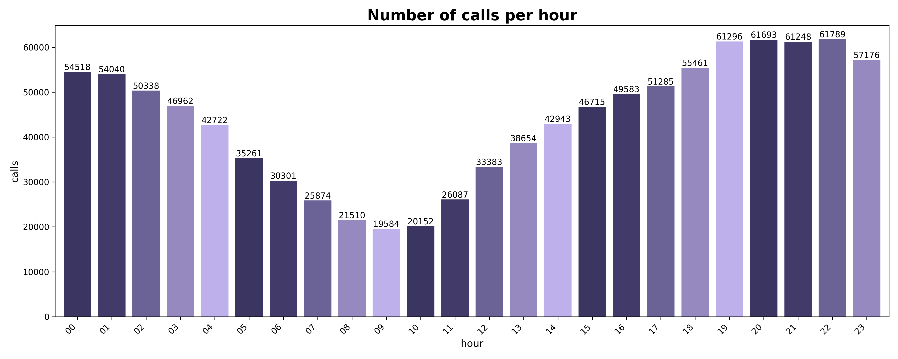
Thus confirming the hypothesis that the highest number of calls occurs during the night period.
Additional:
The severity of calls is greater during the period with the most calls.
Broadly, understanding the severity of calls is essential for distributing police patrols throughout the day.
With all the information grouped, it was just a matter of plotting the graph.
visual.plot_graf_pie_by_hour(sub_df_2, "18", 'priority_per_hour.png', 'priority')
Conclusions
Based on the graphs below, it is possible to observe that, although the time of day changes, the difference in severity by hour is somewhat irregular.
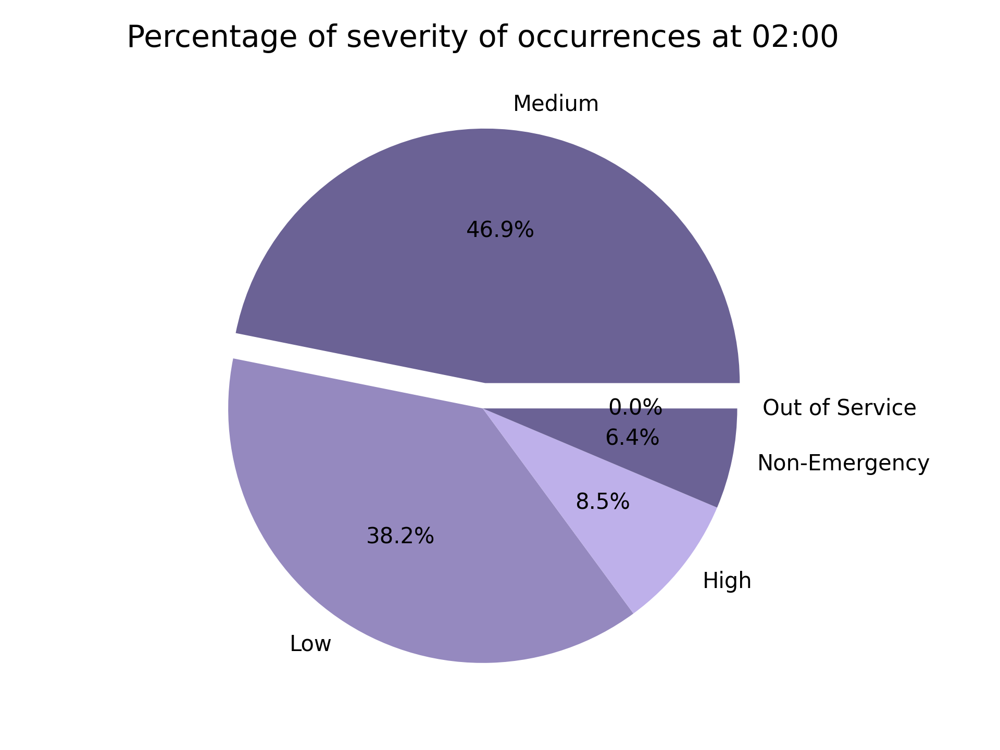
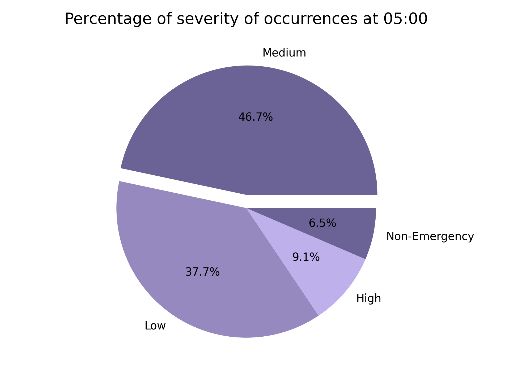
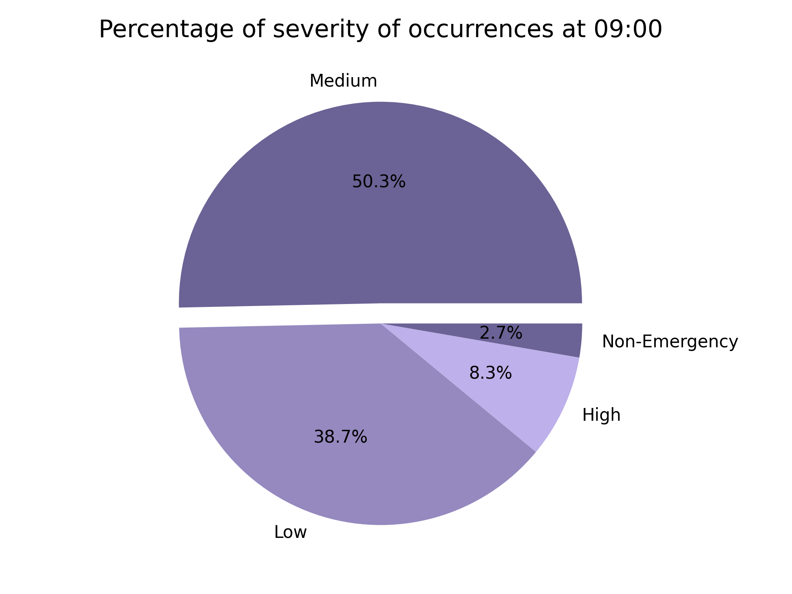
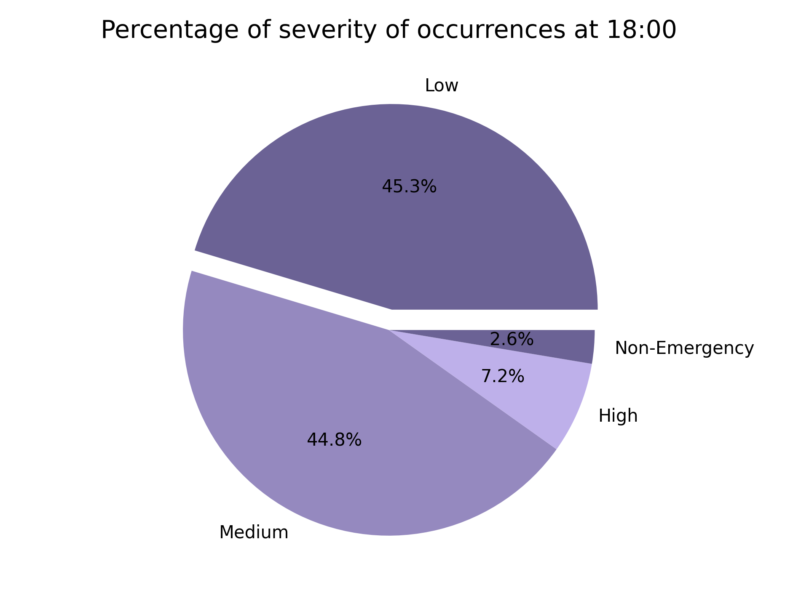
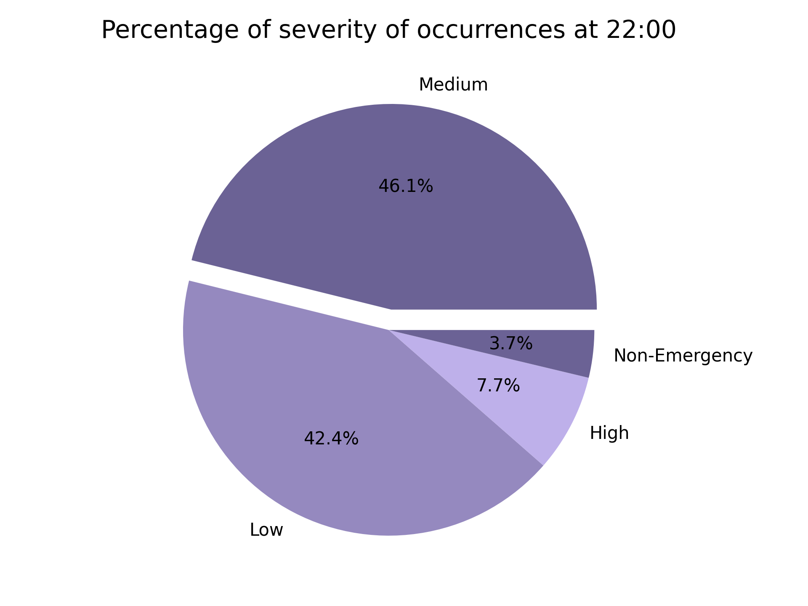
Still, it is possible to notice an increase in high-severity calls during the early hours, from 02:00 to 02:59 and from 05:00 to 05:59, along with a greater presence of low- and medium-severity calls.
Based on this, it is not possible to determine whether the hypothesis has been refuted or confirmed, and further investigation is required.
Silent 911 calls are among the main occurrences.
We can also highlight the importance of investigating the main types of occurrences throughout the day.
Therefore, we grouped the calls by hour and counted the size of each grouping by description, or “number of calls per description.”
sub_df.groupby('description').size()
We then selected the 15 most frequent occurrences.
ax.get_first_15_most_frequency(sub_df, sub_groupby_2)
Based on the graphs below, it is noticeable that the changes in time influence the most frequent occurrences.
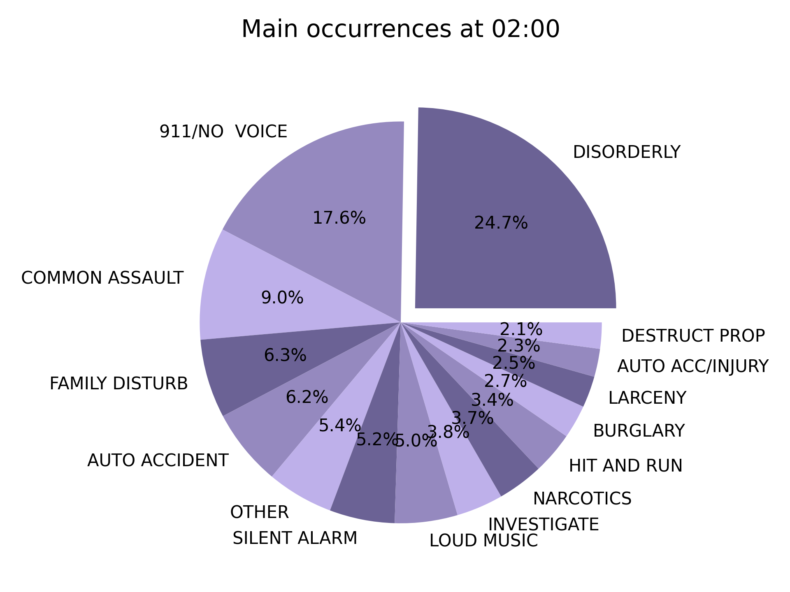
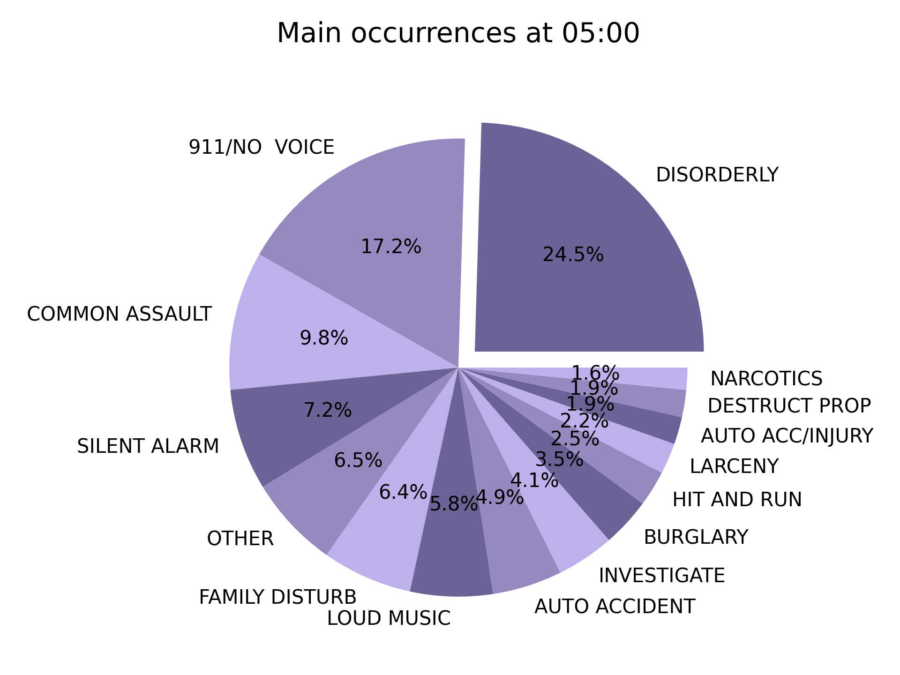
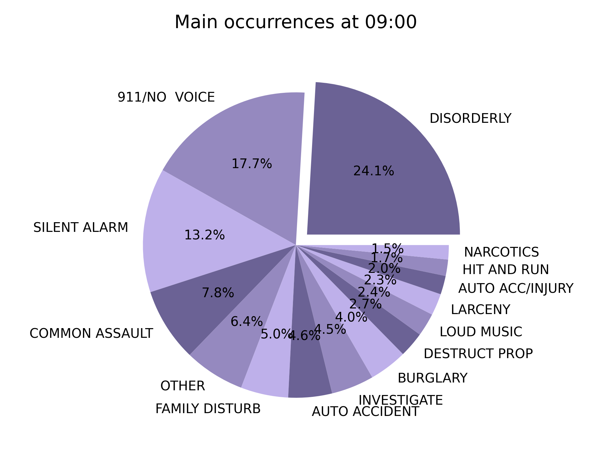
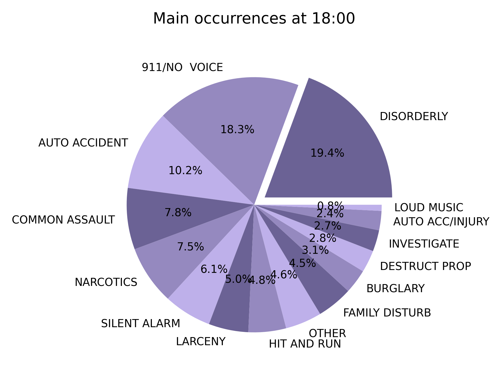
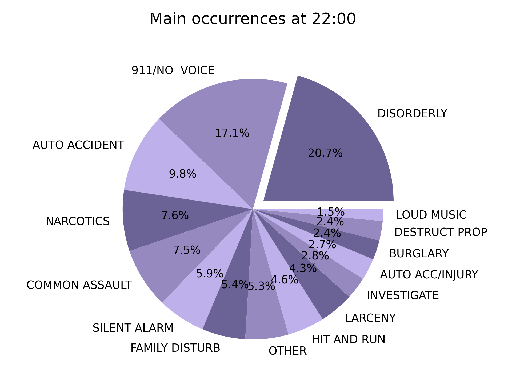
Finally, analyzing some essential information, although “911/no voice” and “disorder” are always the most frequent occurrences:
During the night period, from 18:00 to 18:59 and from 22:00 to 22:59, the number of narcotics-related incidents is considerably higher than during other times.
From 02:00 to 02:59 and from 05:00 to 05:59, the number of assaults stands out.
And from 09:00 to 09:59, car accidents are the third most frequent occurrence.
Confirming the hypothesis
{kind=link}
{kind=link}
{kind=link}
{kind=link}
{kind=link}
{kind=link}
{kind=link}
{kind=link}
{kind=link}
{kind=link}
{kind=link}